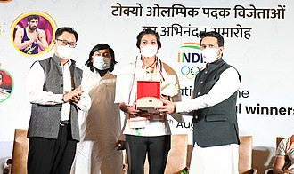

Lovlina Borgohain is an Indian amateur boxer who won a bronze medal at the 2020 Summer Olympics in the women's welterweight event, becoming only the third Indian boxer to win a medal at the Olympics. She won the gold medal at 1st India Open International Boxing Tournament held in New Delhi and silver medal at 2nd India Open International Boxing Tournament held in Guwahati. Borgohain is the first female athlete and the second boxer from Assam to represent the state in the Olympics. In 2020, she became the sixth person from Assam to receive Arjuna Award.
